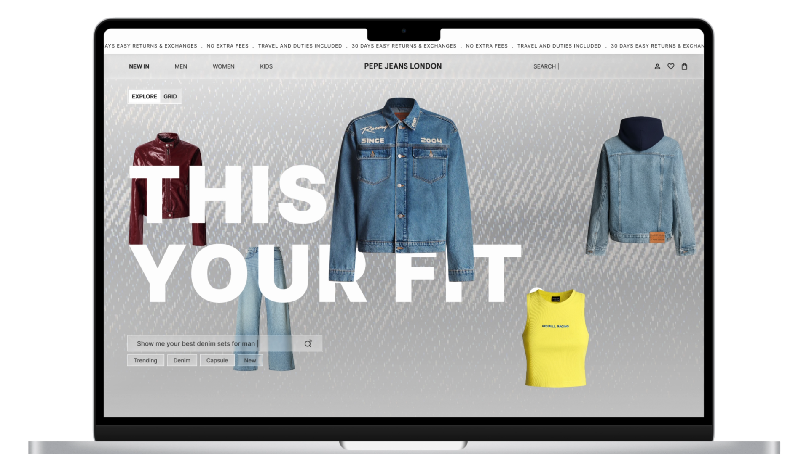
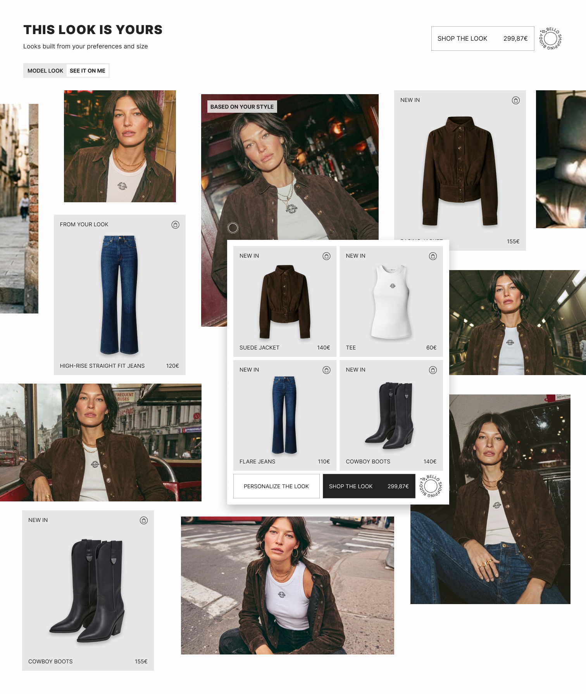
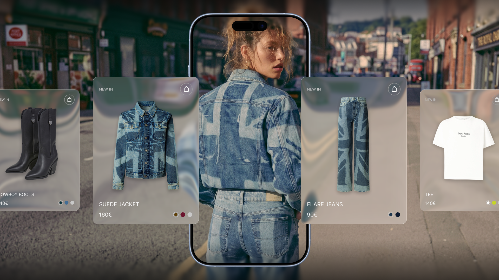
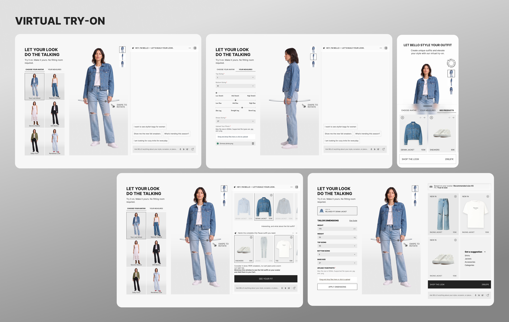

Pepe Jeans
Designing BELLO — an AI-powered shopping buddy and personal stylist — for one of Europe's most recognised fashion brands.

01 / Context
Pepe Jeans (founded 1973, London heritage, 100+ countries) had built a substantial global e-commerce platform but faced a challenge common to mid-premium fashion brands: strong product and brand equity offline, a digital experience that couldn't match it. The brief that arrived wasn't a standard UX refresh — it was a strategic bet.
Pepe Jeans wanted to move beyond passive browse-and-filter shopping and build a platform that could actively style customers, help them visualise fit, and make personalised recommendations. The anchor feature was BELLO — a conversational AI shopping buddy that would become the primary discovery entry point across the redesigned platform. My role was to design BELLO and the four AI-powered features built around it.
02 / The Problem
Business challenge. Fashion e-commerce conversion is structurally limited when customers can't visualise how something fits. Returns are costly, confidence at purchase is low, and catalogue discovery is passive. Pepe Jeans needed to close the gap between the tactile, advice-driven experience of physical retail and what the digital channel could offer — and do it before digitally-native DTC competitors set the expectation.
User pain points. The biggest barriers to conversion weren't interface friction — they were fit anxiety and discovery paralysis. Users didn't know how products would look on their body. They were overwhelmed by catalogue breadth and couldn't find "their" style within it. "Just browsing" was a symptom, not a behaviour.
Stakes. AI-powered personalisation in fashion was moving from differentiator to table stakes. For Pepe Jeans to compete for the next generation of customers, the platform needed to leapfrog a standard UX upgrade and build genuinely novel capabilities.
03 / Research
Methods: user interviews, session recording analysis, fit-return data review, competitor benchmarking of AI-powered fashion tools, and concept validation with target users.
- 01 The majority of returns cited "fit" as the primary reason — a problem no amount of PDP redesign would solve. Size guides were distrusted because they showed measurement ranges, not how a garment actually fits different body types.
- 02 Users described shopping decisions as "a gamble." The absence of a fitting room wasn't just a practical gap — it was an emotional one. Confidence at the point of purchase was structurally low.
- 03 Discovery was broken in a specific way: users weren't struggling to find products — they were struggling to find their identity within the catalogue. The question wasn't "what does Pepe Jeans sell" but "what should I be wearing."
- 04 Competitor benchmarking of early AI styling assistants (primarily US DTC brands) showed measurable impact on session depth and conversion — but most were bolted on rather than integrated into the core flow.
- 05 Users who received personalised outfit recommendations converted at significantly higher rates than users who browsed independently. The value of curation over discovery was clear.

"Users didn't need better filters.
They needed someone to tell them what to wear."
04 / Design Approach
Core architectural decision: BELLO as the primary discovery interface, not a sidebar feature. Most AI assistants in retail are addons — a chat widget bolted onto an existing browse experience. The decision here was to make BELLO the entry point itself, with the traditional grid as a secondary mode. That changed every design decision that followed.
BELLO — AI Shopping Buddy
Conversational AI stylist that handles natural language queries ("show me the best denim sets for a night out"), processes style inspiration images via upload, and builds outfits through dialogue. Designed as the front door to discovery — not a fallback. Voice input, image upload, and catalogue-aware responses across mobile and desktop.
Virtual Try-On — "See Your Fit"
Avatar-based fitting room. Users input measurements or upload a photo; the system generates a personalised avatar. Products render on the avatar with size recommendations. "Model Look" / "See It On Me" toggle lets users switch between editorial imagery and their own fit. Designed to close the confidence gap at the point of purchase.
Look Builder — "This Look Is Yours"
AI-generated complete outfit recommendations built from user style preferences and size — surfaced as a shoppable visual grid. "Shop the Look" delivers one-tap checkout at the full outfit price. "Personalize the Look" lets BELLO swap individual pieces. Rejected: a purely editorial approach (static "Shop the Look" modules performed significantly worse in validation).
Visual Search
Camera-based style matching: photograph an outfit you like, BELLO identifies similar items in the catalogue. Reduces discovery friction to zero for style-inspired shoppers. Built as a camera-first mobile experience with a desktop image-upload equivalent.
All four features were built on a unified design system — a shared frosted glass card treatment for product surfaces, a consistent AI conversation UI pattern, shared avatar rendering components, and a token architecture that scaled across mobile and desktop.



05 / Outcomes
46%
Increase in platform traffic following BELLO launch
4
AI features shipped from scratch
1st
Unified design system across PJ's digital estate
The design system established a shared component and token architecture across all four AI features and every digital surface — the first time Pepe Jeans had a single source of truth for design. Return rate impact from Virtual Try-On is in data collection at time of writing.
06 / What I'd do differently
The BELLO conversational interface required more design iteration cycles than any other feature — getting the tone, response latency patterns, and handoff between AI conversation and product grid right took rounds of testing. In retrospect, I'd have built a dedicated conversation design framework earlier rather than treating the chat UI as a standard component. How an AI stylist communicates — confident but not prescriptive, suggestive but not pushy — deserves its own design language before the first wireframe.
The virtual try-on accuracy also depended heavily on measurement input quality. The avatar configuration experience was designed after the core try-on feature was specced, which created some inconsistency in the early flows. Starting with the onboarding and measurement capture experience and working outward would have produced a tighter system from the start.
Back to first project
Digital DraughtMaster — Carlsberg